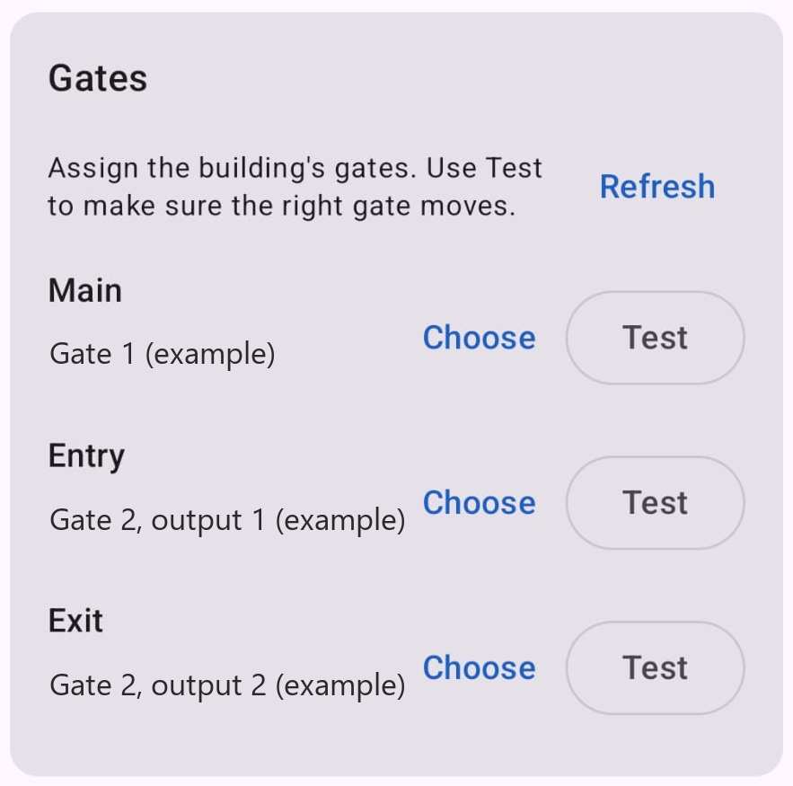
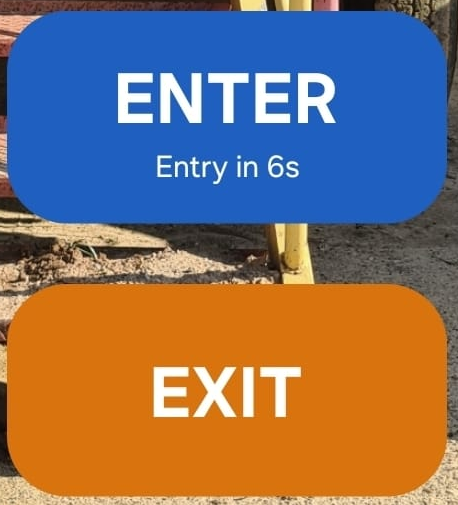

GateDelay – מדריך התקנה והגדרה
פתיחה טורית של שני שערי חניון באמצעות PalGate | Android
1. התקנת האפליקציה
- קבלו את קובץ GateDelay.apk ממפתח האפליקציה לאחר אימות המקור.
- פתחו את הקובץ בטלפון Android ואשרו התקנה ממקור חיצוני רק אם אתם סומכים עליו.
- לחצו התקנה ופתחו את GateDelay.
2. קישור חשבון PalGate
- ב־GateDelay פתחו Link account.
- לחצו Show on another screen (share QR) והציגו את הקוד במחשב או בטלפון נוסף.
- בטלפון שלכם פתחו PalGate ← הגדרות ← יחידות מקושרות ← קישור יחידה.
- סרקו את קוד ה־QR, חזרו ל־GateDelay והמתינו להשלמת הקישור.
- שמרו את קוד ה־QR פרטי: סריקתו עשויה לאפשר קישור לחשבון.
3. הגדרת רצף השערים
- בחרו ב־GateDelay את השער הראשון והשני ואת זמן ההשהיה ביניהם.
- דוגמת כניסה: שער חיצוני ← 10 שניות ← שער פנימי.
- דוגמת יציאה: שער פנימי ← 27 שניות ← שער חיצוני.
- התאימו את ההשהיות למרחק בין השערים ולזמן הנסיעה.


4. כפתורים במסך הבית

- לחצו לחיצה ארוכה על מסך הבית ← יישומונים (Widgets).
- חפשו GateDelay והוסיפו את כפתורי הכניסה (ENTER) והיציאה (EXIT).
5. הגדרות מומלצות בסמסונג
- הגדרות ← חיבורים ← Wi-Fi ← Intelligent Wi-Fi ← הפעילו "עבור לנתונים ניידים".
- הגדרות ← יישומים ← GateDelay ← סוללה ← ללא הגבלה.
- נתונים ניידים פעילים תמיד (מומלץ, למעבר מהיר בין רשתות): הנתונים הניידים נשארים פעילים גם כשהטלפון מחובר ל־Wi-Fi, כך שהמעבר לסלולר ביציאה מטווח ה־Wi-Fi כמעט מיידי. עלול לצרוך מעט יותר סוללה.
- הפעלת אפשרויות למפתחים: הגדרות ← אודות הטלפון ← פרטי תוכנה ← הקישו 7 פעמים על "מספר Build".
- הגדרות ← אפשרויות למפתחים ← הפעילו Mobile data always active.
6. בדיקת תקינות
- ודאו ששני השערים נפתחים בנפרד באמצעות PalGate.
- בדקו שהקישור ל־GateDelay פעיל ושסדר השערים נכון.
- בדקו את הרצף תחילה כשהרכב עומד במקום בטוח.
- בדקו גם עם חיבור סלולרי בלבד ועם מסך כבוי.
7. פתרון תקלות
- קישור נכשל: בדקו חיבור לאינטרנט, QR עדכני והרשאת קישור ב־PalGate.
- שער שני מתעכב: בדקו מעבר Wi-Fi/סלולר, מגבלות סוללה וזמן ההשהיה.
- שער שני לא נפתח: בדקו סדר שערים, הרשאות וחיבור לאינטרנט.
הערת אבטחה: GateDelay אינה אפליקציה רשמית של PalGate. אימות מקור הקובץ חשוב לפני קישור החשבון.
קוד מקור: https://github.com/Moran296/GateDelay